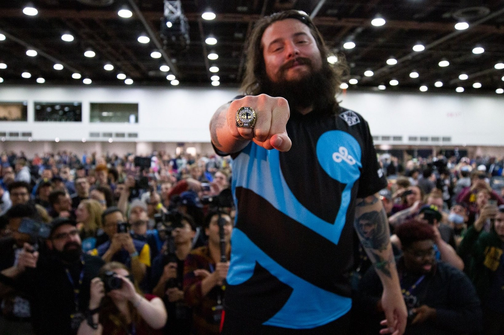
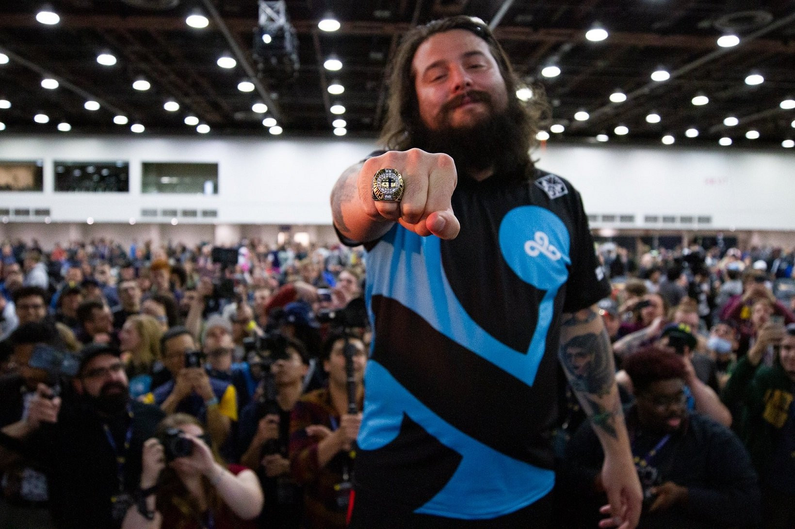

Why I wanna become a web developer
12/8/22 I've loved computers as long as I could remember. Even *before* I could start to remember my own life. My family tells me I learned how to be able to type enough to be able to access
a few websites like the Cartoon Network website, when I was 3. I was able to surf the web alright enough since I was 4. I learned how to type full sentences quickly from playing Runescape when I was 6. Computers always were just a natural interest of mine; just a fact of my life.
I always wanted to do something *more* with computers over the next years of my life, to learn to code, but I just didn't know how I'm possibly supposed to do that, how I would even get started, especially just knowing that I was a kid
and it seemed like that sort of thing is more of adult stuff. However, I would finally get a real oppurtunity at being able to take it upon myself to learn to be a programmer when
I'd finally earned my own powerful computer by getting into a really difficult middle school program which would essentialy allow me to start and finish high school earlier.
I could finally do it, I didn't have to be too scared of trying to do too much in fear of breaking the family computer or anything, I could finally do what I wanted.
I would learn the very basic basics of Python over some of that summer, I was considering trying some online course that'd be able to teach me more, trying to find anything external I could do that would be willing to teach
12 year olds, I was pretty set on finally becoming a programmer. However, that very difficult school program would eventually start,
and it was very quickly harder than anything I've done before in school, and it essentially being the same atmosphere as highschool was a lot to take in for me. Too much. It was very quickly overwhelming and I basically had to immediately abandon any interest I had in programming
because I could already only barely do well enough in that school I was in.
I would deal with this for quite a while and I would kind of completely forget about my passion for coding in the years after, until last year. I started to learn more about coding again
because of some friends who were very interested in that, as well as realizing programming is some of the only work I could truly see myself doing and enjoying. I could use code for so much good,
use it for creative endeavours even if I wanted, just so much. I finally attempted again for the first time since middle school to teach myself some coding, little by little throughout this year, until finally
feeling confident enough in wanting to start *and* being able to commit to a coding bootcamp.
I am very glad to have an oppurtunity to make something of this with Coding Temple, and I can't wait to see where this brings me.
 
